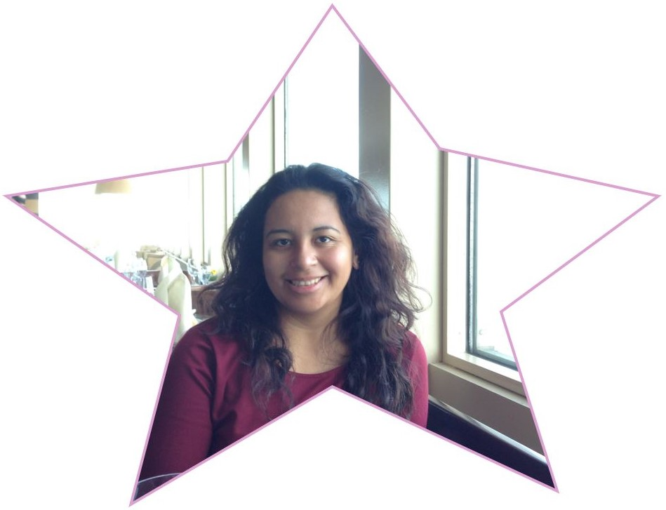

About Me
Hey there! My name is Iliana and I am a finance expert 💲, mother 🤰🏽, and geekdom enthusiast 🧝‍♀️. Currently I work as a Financial Assistant at Northwestern University where I specialize in graduate student funding and managing faculty grant portfolios. I am a graduate 👩🏽‍🎓 of the University of Illinois at Chicago (undergrad) and Northwestern University (grad).
My personal interests include collecting anything with Hello Kitty, cosplaying at Comic Conventions and traveling ✈️ the world. I have started getting my son involved with my cosplay, in 2019 I took him to his first convention where we went as Princess Leia and an Ewok from Return of the Jedi. In terms of traveling I have been to 10 countries so far. I believe that traveling the world gives one a different perspective and teaches people to be accepting of others.
I am currently attending the Northwestern Coding Bootcamp where I hope to gain skills to become a full stack web developer 💻. Learning to code has long been a goal of mine and I am excited for the opportunity to be a part of this program.